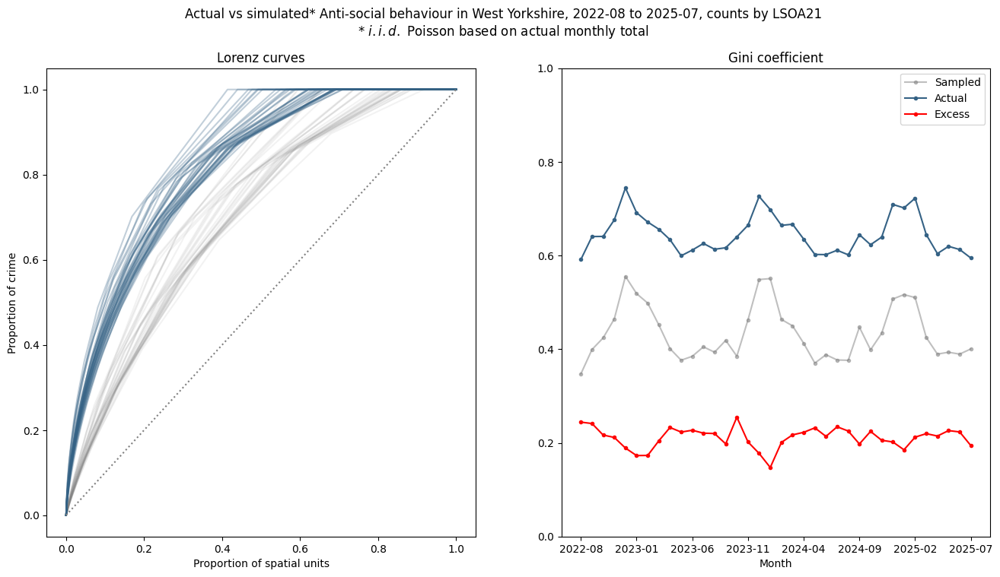
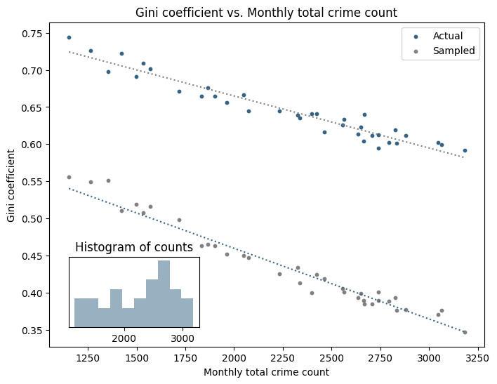
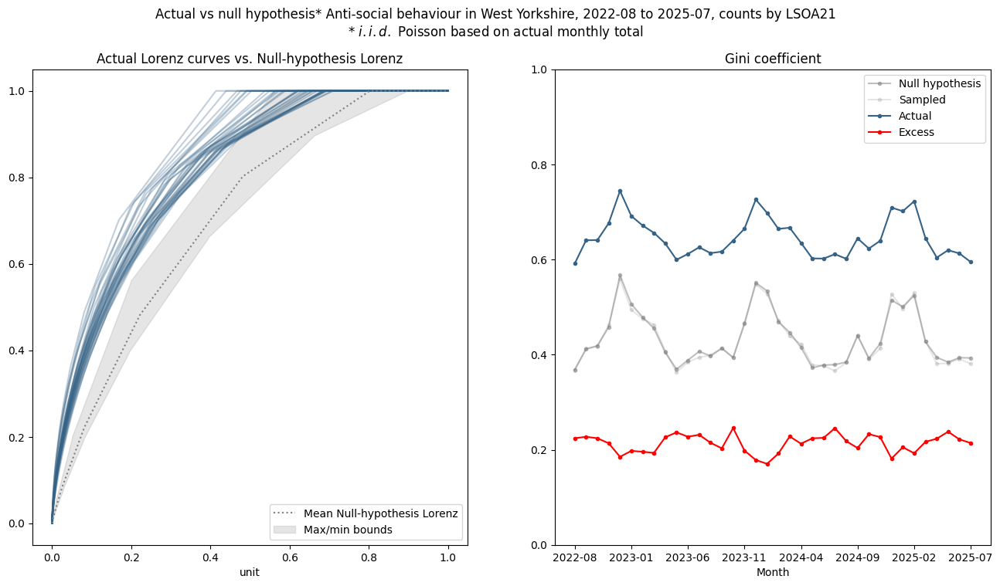
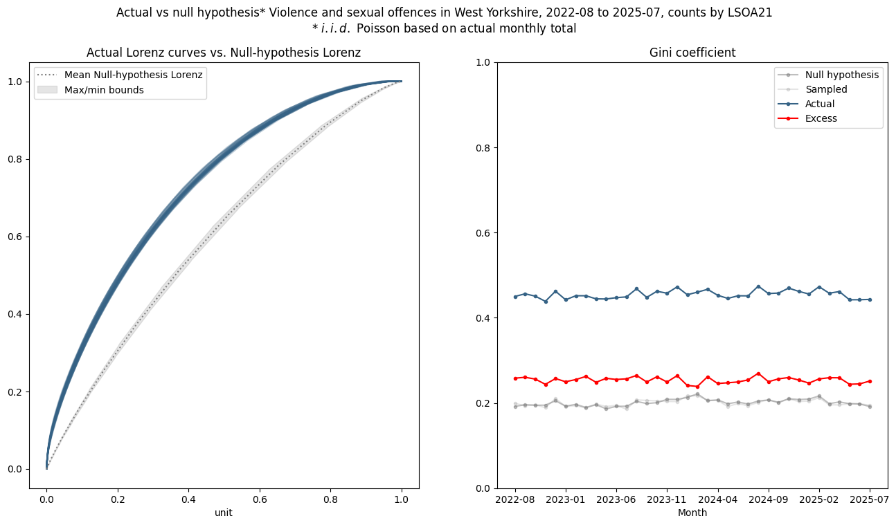
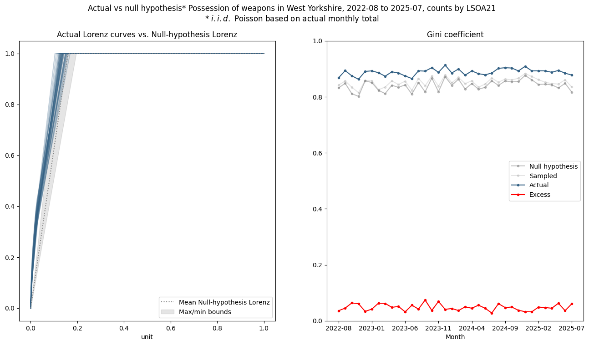
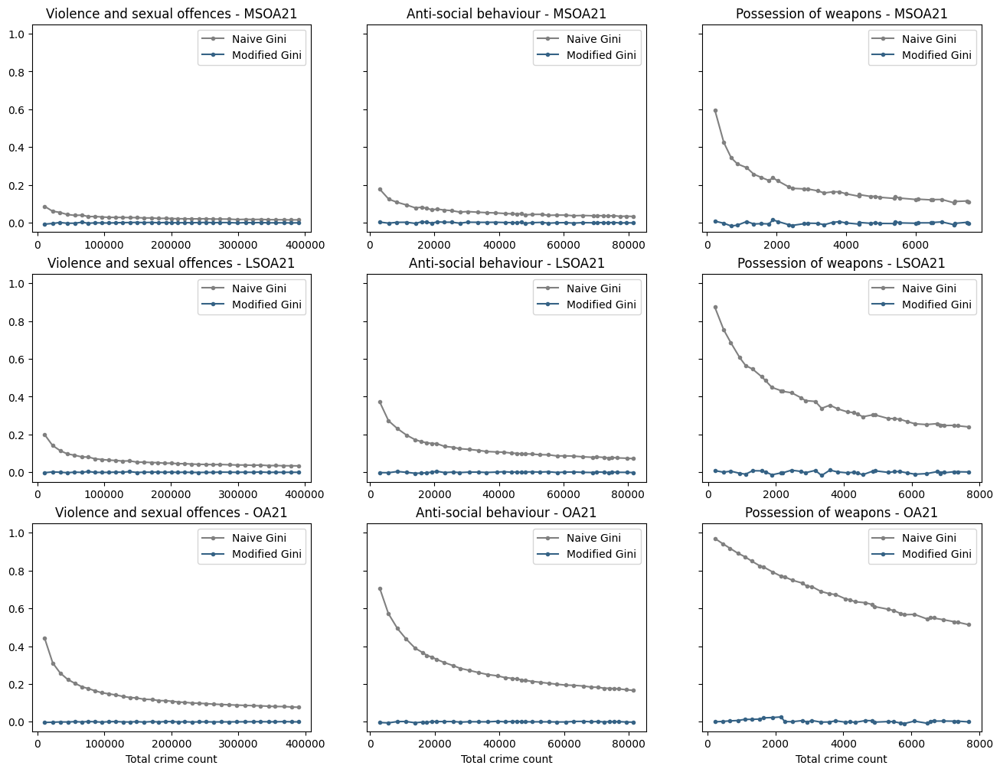
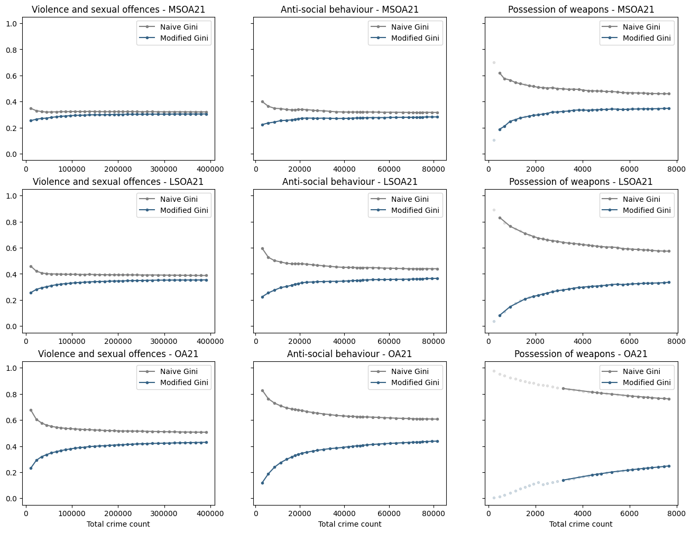
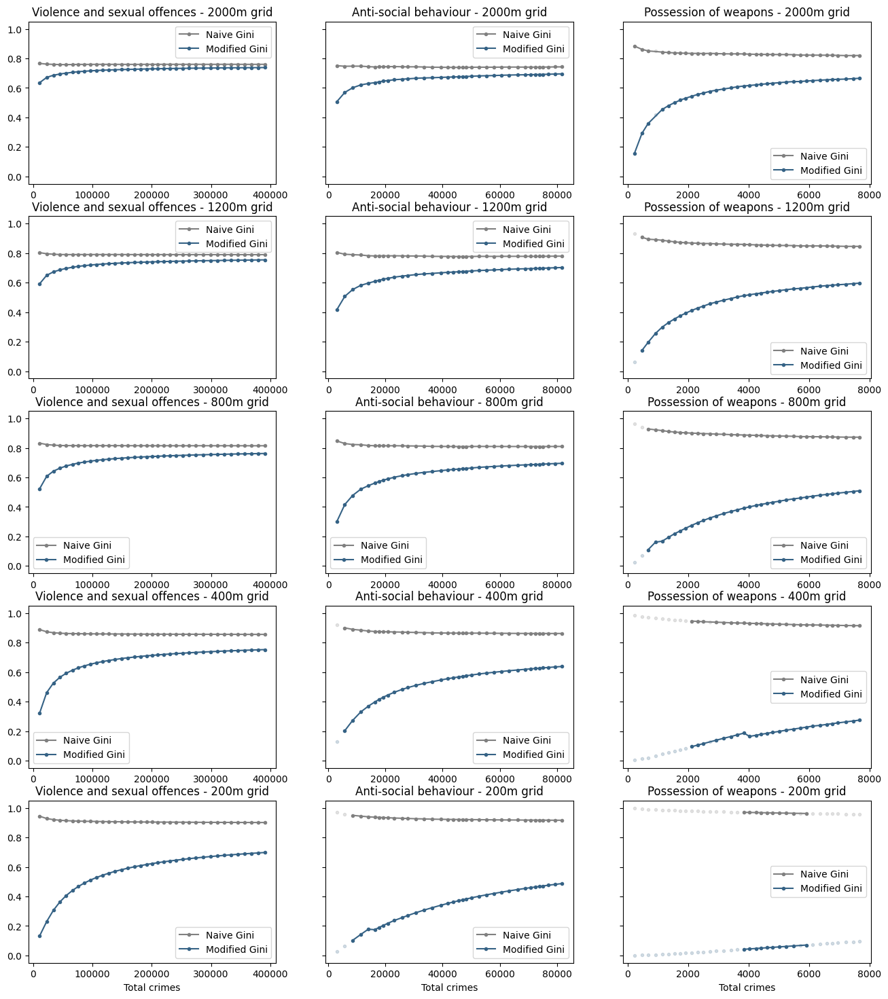

Measuring Crime Concentration (Part 2)
We demonstrated in part 1 that random data with no structural concentration will exhibit some concentration using the traditional measures. In this article we taker a deeper dive into this claim.
Recall that our null hypothesis was that crimes are not concentrated, crime is is no more or less likely to occur in any given spatial unit, and the chance of a crime occurrence is not affected by previous events.
Motivating example - Seasonality
Public crime data in the UK contains precise (but obfuscated) location data, imprecise temporal information (the month of occurrence) and broad categorical information (around a dozen categories). Taking 3 years of data for incidents of ASB in West Yorkshire, aggregating crime into spatial units (in this case LSOA) we can plot a graph of (naive) Gini over time.
This graph shows some clear seasonality - concentration increases in the winter and decreases in the summer. A fairly obvious explanation for this would be that since antisocial behaviour generally occurs outdoors, there are simply more outdoor gatherings in warmer weather and longer daylight hours, therefore more opportunities.

However, more careful analysis of the data shows the apparent seasonality is an illusion. Here's why...
Put in statistical terms, our null hypothesis is that crime counts in each spatial unit are i.i.d Poisson processes, with intensity \(\lambda = C / N\) where \(C\) is the total number of crimes and \(N\) the number of spatial units. In other words each spatial unit is identical in terms of its propensity to contain crime.
For the dataset in question, \(\lambda\) ranges between 0.82 and 2.26 over the 3 years. Since in most cases \(\lambda \ge 1\), the adjustment suggested by Bernasco and Steenbeck (see part 1) would have no effect.
A comparison of actual vs sampled crimes - both Lorenz curves and Gini coefficient - broadly shows what we expect: actual crime data is more concentrated than sampled data and the sampled data appears to show some level of concentration.

But the most interesting point to note is that the sampled data appears to share the seasonality of concentration of the real data, and if you compute the "excess" Gini by subtracting the sampled Gini from the actual Gini values, the seasonality disappears, in fact the "excess" is negatively correlated with naive Gini, suggesting - if anything - the opposite of our original explanation.
But since we know the sampled data is not concentrated (by construction) we must conclude that there is no (strong) seasonality in the actual data. The variation we observe is (almost) entirely due to a seasonality in count data, that is, there are simply fewer incidents of ASB, and because our concentration metric is flawed, it appears as an increase in concentration. This is clear from a scatterplot of Gini against total crimes in each month:

Now, going back to the null hypothesis, we have a range of counts and we could compute a null-hypothesis Lorenz curve for each, but it probably makes more practical sense to compute bounds on the Lorenz curves we would expect under the null hypothesis. Repeating the graph from above yields

There is little discernable difference from the analytic null-hypothesis Gini and the sampled Gini (as we would expect).
Looking at some other crime types - firstly violent crime, which has a much higher incidence (~11000 per month compared to ~2300 for ASB) and no apparent seasonality:

Here most of the observed concentration is real, as the bias is lower due to the higher incident counts at this spatial scale.
Whereas for the less frequent crime of possession of weapons (~210 per month):

almost all of the apparent concentration arises from the low-observation bias.
From here, the next steps are to determine how far along the road to spatial invariance this get us, and also potentially investigate whether it is possible we can improve upon our null hypothesis using a more sophisticated statistical model?
Scale Invariance
Traditional measures of concentration are well-known to not be scale-invariant, and thus making comparisons of count data at different spatial or temporal scales is extremely difficult - smaller scales will always produce higher concentration values, and, importantly, this is true for randomly sampled data.
The hope is that by using a concentration measure that compensates for the null hypothesis we will take a step towards scale-invariance. We shall investigate this further in a subsequent post.
Modified Gini
Naive Gini is given by double the area under the Lorenz curve (1), above the diagonal. This means it can take values between 0 (fully dispersed) and 1 (fully concentrated). Recall the Lorenz curve for ordered discrete count data \(c(i)\) of length \(N\) is
- The convention in criminology is to represent the curve as a plot of cumulative counts from highest to lowest, which "flips" (both vertically and horizontally) the form normally seen in fields such as Economics.
where \(x=k/N\) - thus the curve is bounded between \([0,1]\) in both the \(x\) and \(y\) axes, enabling easy comparison between datasets of different sizes.
Properties of the Lorenz curve
Other important properties arise from the ordering - the curve is bounded by the lines \(y=x\) and \(y=1\), and must increase monotonically. If it rises above \(y=x\) then it must level off - the rate of change of the gradient can only stay the same or decrease:
The Gini coefficient can be computed from the Lorenz curve using the formula:
We can compute an exact null-hypothesis Lorenz curve from the inverse CDF of the Poisson distribution:
Explanation of the formula
The theoretical Lorenz curve for independent identically distributed samples is the cumulative sum of inverse CDF \(F^{-1}(p; \lambda)\) of the Poisson distribution
the denominator can be simplified using a change of variables - it is in fact just the mean of the distribution. Since \(x = F^{-1}(p)\), \(p = F(x)\) and \(dp=f(x)dx\) (the PDF). When \(p=0\), \(x=-\infty\) and when \(p=1\), \(x=+\infty\). Substituting into the denominator produces the expectation, i.e. the mean:
In the Gini formula, the \(x\) term represents the maximal dispersion line. we have argued that this line does not represent a reasonable lower bound and should be replaced by the null hypothesis Lorenz curve, resulting in the modified Gini coefficient:
which has different properties to naive Gini. Although a value of 1 still represents maximal concentration, 0 now represents the level of concentration expected under the null hypothesis, and negative values can arise if the counts are more dispersed than this. Significant negative values imply some form of mean-reversion mechanism, in practical terms this could imply some level of planning and organisation on the part of perpetrators, or a finite number of dispersed and limited opportunities.
Results
The graphs below depict naive and modified Gini coefficients for simulated (non-concentrated) data matching actual crime counts for the three crimes of varying rates of incidence we have studied, at varying spatial and temporal scales, using census geographies:

The x-axis is expressed in terms of the count of total crimes in the aggregation period. The periods vary from 1 to 36 months. As expected, our modified Gini measure correctly shows no concentration, whereas the naive Gini measure shows a degree of concentration that varies according to the size of the spatial unit and the total count/temporal scale, demonstrating that is is neither accurate nor consistent and thus not a statistic that can be used for comparison.
Turning to the real data, we do (as expected) observe some concentration. The modified Gini is always lower, again as expected, as we knew concentration was being overestimated. As the count/temporal scale increases, the two curves converge on the same value, again as expected. Repeating the analysis for census geographies:

and also for regular square grids of different sizes

However, whereas the naive Gini tends to be significantly higher for smaller spatial scales or total counts, the opposite appears to be true for for the modified Gini. This could be because
- there is a flaw in the Gini adjustment, and/or...
- the data actually has a structure where the degree of concentration varies with scales
In order to fully confirm or eliminate these points, we need to investigate how the modified Gini behaves using simulated counts from an over-dispersed distribution. More on that in the next instalment, but in the meantime there are a couple of tests we can carry out to see if the modified Gini is trustworthy:
p-value
The Gini adjustment is based on our null hypothesis that crimes are not concentrated. Therefore we can compute a p-value from a Chi-squared test on the count data, and if the null hypothesis is not rejected (i.e. a p-value above ~0.05) we can say with certainty that the count data is too sparse to measure any meaningful concentration.
Consider the extreme case where we have 100 spatial units and a total count of 1. Because we are dealing with discrete quantities the single value must be in a single state. Clearly in this case it is meaningless to attribute a concentration, but Naive Gini will give this a value of 0.99, and modified Gini around 0.
If the total count is 2, and the crimes occur in 2 different units, this represents the least concentration possible, yet naive Gini will be 0.98. Modified Gini however, is - correctly - around zero. But conversely, the concentrated case where both events happen in the same spatial unit - naive Gini is 0.99 but modified is a very low ~0.01. However, the p-value tells us that we cannot meaningfully measure concentration for data this sparse
Skew
However, even when counts are on the low side, but high enough for the null hypothesis to be rejected, concentration measures are not consistent.
The Poisson distribution is highly skewed when the intensity is low, with a value of \(1/\sqrt{\lambda}\). This creates a bias when sampling from the distribution, or fitting observed values to a Poisson distribution, resulting in a larger adjustment than necessary. One possibility is to incorporate a further adjustment, based on the observed skew (or coefficient of variation) to the modified Gini to compensate for overdispersed low count effects. However, this adds a further level of complexity that could deter adoption of the measure and its usefulness in terms of explainability to wider audiences.
Conclusions and Further Work
-
Naive Gini overestimates concentration
-
Naive Gini is not comparable across different spatial or temporal scales
-
Even at the same spatio-temporal scale, Naive Gini is not comparable over time when there is variation in unit counts
-
Modified Gini allows more direct comparison between different spatio-temporal, but it also is not scale invariant so care must be taken
-
More work needs to be done to understand how modified Gini behaves when counts are low, especially in the presence of overdispersion.
-
More work needs to be done on establishing whether Poisson-Gamma can in fact be treated as a useful baseline for Gini adjustment.
-
More work needs to be done on the viability of an "explainable" Poisson mixture model. This could be combined with "zero-inflated" models (Poisson or NB) that account for an excess of zero counts driven potentially by features of the spatial units.